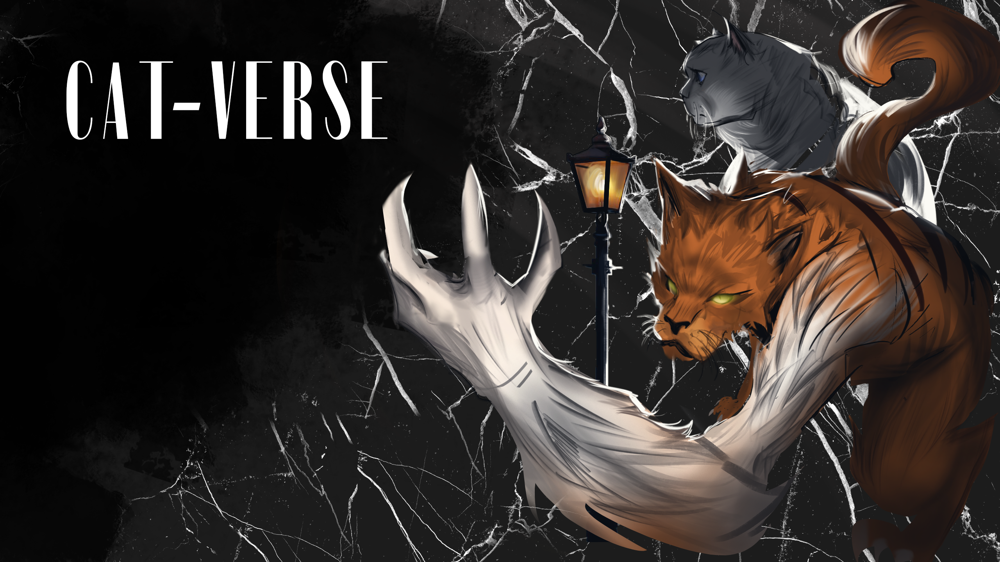

Cat-Verse

For a 48-hour game jam with the theme "Cat-like," I designed a captivating puzzle game that challenges players to harmonize the unique abilities of two characters. One feline-inspired character possesses the agility to attack sideways and perform nimble jumps, while the other showcases strength by smashing objects below. The ingenious twist comes as the latter character can lay down, creating a platform for the first character to leap onto.